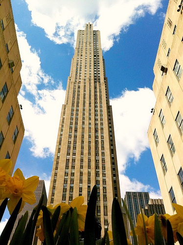

modello a campanile
L’edificio doveva essere concepito con una base ben ancorata al terreno che doveva elevarsi per non più di 15-17 piani e che doveva occupare tutta l’estensione territoriale del lotto. Il fronte della torre poteva elevarsi solo nella parte centrale del nocciolo (del core) dell’edificio. Da qui deriva il nome a campanile dal momento che tutti gli edifici di questo tipo mostravano un’esile ma alta torre che emergeva dal corpo centrale dell’edificio proprio come un campanile. Questa limitazione non solo garantiva una normale illuminazione naturale delle strade ma permetteva (al largo della base della costruzione) uno sviluppo in altezza teoricamente infinito per la torre. L’esempio più celebre di questa tipologia di edificio è rappresentato dal Woolworth Building che, con il suo “campanile”, raggiunge già nel 1913 quota 241 metri senza problemi.

modello a ziggurat
Secondo questo modello strutturale l’edificio poteva svilupparsi in altezza teoricamente all’infinito ma con un progressivo arretramento del fronte che doveva culminare con l’apice della costruzione. Da qui deriva il nome che fa riferimento alle antiche piramidi mesopotamiche e che porta qualche suggestione d’antichità alle più moderne costruzioni dell’uomo. Questo nuovo modello garantiva sì (ancora una volta) un’illuminazione naturale sufficiente alle strade sottostanti ma permetteva uno sviluppo più dinamico e vertiginoso agli edifici, eliminando quel forte stacco architettonico fra la base dell’edificio e la torre vera e propria (che si elevava già a partire dai primi piani della base), permettendo agli architetti di poter raggiungere quote considerevoli dell’ordine degli oltre 200 metri. Così fu concepita l'”ammiraglia” del famoso Rockefeller Center: il celebre General Electric Building, che l’architetto Raymond utilizzando i caratteristici set-backs (o rientri del fronte) è riuscito a elevare per oltre 260 metri di altezza dal suolo. L’edificio è stato definito new babylon per la sua complessa struttura.